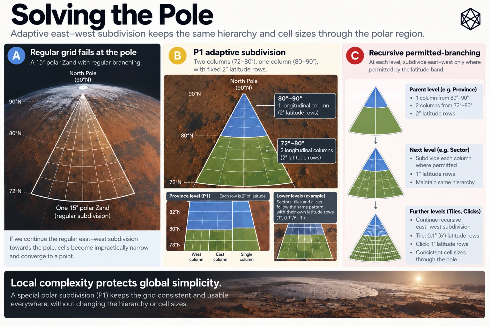
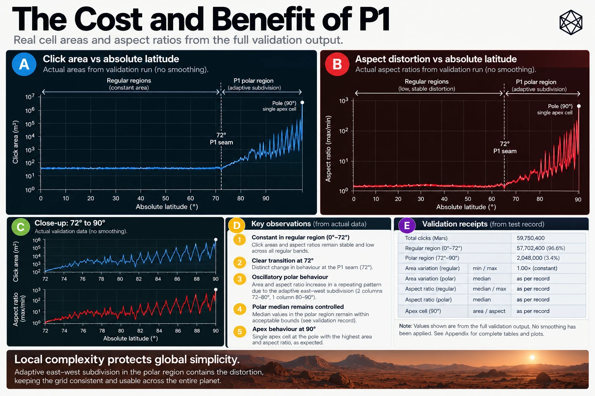

F - Polar GRID — Geometry and Rules
Adaptive Subdivision, P1 Branching and the Geographic Poles
Mars GRID uses straightforward angular subdivision across most of the planet. Between 72° south and 72° north, its Provinces, Sectors, Tiles and Clicks follow fixed latitude and longitude increments. The resulting hierarchy is easy to reconstruct and remains directly connected to the coordinate framework beneath it.
Near the poles, the same rule produces progressively poorer physical proportions. Longitude lines converge, east–west distances contract and angular rectangles become increasingly narrow wedges. Eventually, at the geographical pole, every meridian meets at one point.
Polar GRID addresses this problem through Polar Rule P1: a deterministic method for adapting longitude subdivision while preserving the existing GRID hierarchy and its north–south scale.
This appendix documents the P1 selection method, its permitted branching counts, complete Province-level structure, representative lower-level cases, global numerical consequences and treatment of the exact poles. It also identifies the machine-readable material required for independent implementation.
The governing principle is simple:
Keep the north–south scale. Adapt the east–west branching.
F.1 — Scope of Polar GRID

Polar GRID applies to the two Martian polar caps:
Region | Latitude extent | Quad | Polar Zands |
|---|---|---|---|
North Polar | 72°N–90°N | Q01 | 24 |
South Polar | 72°S–90°S | Q26 | 24 |
Combined | Both polar caps | 2 Quads | 48 |
At Zand level, the structure retains the twenty-four 15° longitude positions used throughout GRID.
Each polar Zand is therefore a wedge extending from 72° latitude to the corresponding pole, bounded by meridians separated by 15°. The wedges narrow towards the apex, where their longitude boundaries meet.
The hierarchy remains:
Mars → Quad → Zand → Province → Sector → Tile → Click
Polar GRID does not introduce another geographic level, another coordinate reference or a separate identifier grammar.
Instead, P1 changes the number of east–west children produced inside a parent. It does so independently for each fixed-height latitude row, using the actual angular width of the parent being subdivided.
A polar Province remains 2° high. A Sector remains 1° high. A Tile remains 0.1° high, and a Click remains 1 arcminute high. The angular height is fixed; the longitudinal child count adapts.
The same rule operates in the northern and southern caps using absolute latitude. The south is therefore not a different geometric algorithm, but the southern application of the same poleward structure.
F.2 — The P1 Aspect-Ratio Rule
F.2.1 — The quantity being optimised
P1 seeks to produce areas whose north–south and east–west physical dimensions remain reasonably proportioned.
For a particular candidate latitude row, define:
- H — the physical north–south height of the row.
- W(c) — the mean physical east–west width of one child when the parent longitude span is divided into c equal parts.
- D(c) — the resulting aspect-ratio distortion.
The distortion measure is:
D(c) = max(H / W(c), W(c) / H)
A value of 1 represents equal mean width and height. A value of 2 represents a unit twice as wide as high, or twice as high as wide.
P1 selects the permitted integer c that minimises D(c).
The physical east–west width is evaluated as a mean across the complete latitude row rather than at its centre alone. This distinction matters because longitude continues to narrow within the row, particularly close to the pole.
F.2.2 — The spherical mean-width model
For a parent longitude span L and a latitude row beginning at absolute latitude u with angular height h, all expressed in degrees, define:
a = πu / 180
b = π(u + h) / 180
Δ = πh / 180
For a reference sphere of radius R, the north–south row height is:
H = RΔ
The mean east–west width of one child among c equal longitudinal divisions is:
W(c) = R × (πL / 180c) × (sin(b) − sin(a)) / Δ
P1 uses a spherical geometric approximation for choosing the subdivision topology. It does not use an exact Martian ellipsoid or local terrain model to choose each integer branch.
The radius R appears in both dimensions and cancels when their ratio is formed. Consequently, the integer branch selection does not depend on a particular numerical estimate of the Martian radius.
F.2.3 — The dimensionless branching ratio
Define the mean width-to-height ratio before longitudinal subdivision as:
q = W(1) / H
Equivalently:
q = (L / h) × (sin(b) − sin(a)) / Δ
Once q is known, the candidate aspect distortion becomes:
D(c) = max(q / c, c / q)
For a given subdivision level, P1 evaluates all permitted integer values of c and chooses the one with the smallest distortion.
The angular parent width, the latitude row and the permitted branching range are sufficient to determine the result.
F.2.4 — Exact branch thresholds and tie-breaking
The permitted child count is an integer between 1 and the maximum M for that level.
A useful equivalent form avoids comparing rounded aspect-ratio values individually.
Begin with c = 1. For each integer k from 1 through M − 1, compare:
q² ≥ k(k + 1)
Whenever the comparison is true, advance the selected count to k + 1.
The final count is the largest permitted integer satisfying the applicable thresholds, or 1 if none is crossed.
For illustration:
Condition on q | Selected count, where permitted |
|---|---|
q² < 2 | 1 |
2 ≤ q² < 6 | 2 |
6 ≤ q² < 12 | 3 |
12 ≤ q² < 20 | 4 |
20 ≤ q² < 30 | 5 |
30 ≤ q² | 6 or higher, subject to further thresholds and the level's maximum |
An exact tie selects the larger child count.
This is the defined P1 rule, not a recommendation left to individual implementations. Two systems must not choose different polar subdivisions because one rounded an aspect calculation differently or resolved a tie in another direction.
The integer decisions form part of the persistent geometry of MGRID:1.
F.3 — Permitted Branching by Level
P1 is constrained by the existing GRID hierarchy.
At every level, longitudinal subdivision must occur within the actual containing parent, using equal-width children. P1 may reduce the child count, but it may not exceed the maximum used by the corresponding regular subdivision.
F.3.1 — Branching limits
Child level | Fixed latitude height | Regular longitude count | P1 permitted counts |
|---|---|---|---|
Province | 2° | 3 | 1–3 |
Sector | 1° | 5 | 1–5 |
Tile | 0.1° / 6′ | 10 | 1–10 |
Click | 1′ | 6 | 1–6 |
The relevant parent longitude span is divided into the selected number of equal parts.
This restriction protects containment. A child cannot escape its parent to obtain a more attractive aspect ratio, and a row cannot independently place arbitrary longitudinal boundaries across neighbouring parent areas.
The result is not a perfectly regular lattice. It is a deterministic nested hierarchy whose branching adapts where necessary.
F.3.2 — Latitude-row behaviour
Every subdivision is selected separately for each row inside its parent.
For example, two successive Sector rows within the same polar Province may select different longitude counts because their mean physical widths differ. The first may divide the Province into three children, while the next divides it into two.
Those counts do not affect the latitude increment. Both rows remain exactly 1° high.
When the hierarchy descends to Tile level, the process begins again inside the particular Sector that contains the location. The Tile selection uses that Sector's longitude width, not the width of the original Zand.
The same principle applies to Clicks inside Tiles.
This dependence on the actual parent is essential. P1 is not a collection of independent latitude-wide grids drawn across the planet. It is a recursive subdivision of an existing hierarchy.
F.4 — Complete Province-Level Polar Branching
Province is the first level at which P1 modifies the regular longitude structure.
Each polar Zand spans 18° of latitude, from 72° to 90°, and 15° of longitude.
The fixed Province height of 2° produces nine latitude rows.
P1 evaluates the complete 15° longitude width independently for each row and chooses either two longitudinal Provinces or one.
F.4.1 — Province branching table
The following table applies to every polar Zand in both hemispheres. Latitude ranges are expressed as absolute latitude, so a row marked 72°–74° corresponds to 72°N–74°N in the north and 72°S–74°S in the south.
Province row | Absolute latitude | Longitude children | Width of each Province | Provinces in row |
|---|---|---|---|---|
1 | 72°–74° | 2 | 7.5° | 2 |
2 | 74°–76° | 2 | 7.5° | 2 |
3 | 76°–78° | 2 | 7.5° | 2 |
4 | 78°–80° | 2 | 7.5° | 2 |
5 | 80°–82° | 1 | 15° | 1 |
6 | 82°–84° | 1 | 15° | 1 |
7 | 84°–86° | 1 | 15° | 1 |
8 | 86°–88° | 1 | 15° | 1 |
9 | 88°–90° | 1 | 15° | 1 |
Total | 72°–90° | 13 |
The first four rows contain two Provinces each, giving eight. The remaining five contain one each, giving five more.
One polar Zand therefore contains:
8 + 5 = 13 Provinces
The Province identifiers follow local row and column numbering. In the lower four rows, columns 1 and 2 are available. In the upper five rows, only column 1 exists.
For example, within one polar Zand:
- P11 represents row 1, longitude column 1.
- P12 represents row 1, longitude column 2.
- P41 and P42 represent the two Provinces from 78° to 80°.
- P51 is the sole Province in the 80°–82° row.
- P91 is the sole Province in the terminal 88°–90° row.
An identifier such as P52 is invalid because Province row 5 has only one longitude child.
F.4.2 — The transition at 80°
At 80° absolute latitude, the Province branching changes from two longitude children to one.
Immediately equatorward of 80°, the 15° Zand is divided into two 7.5° Provinces. Immediately poleward, the whole 15° width belongs to a single Province in that row.
The boundaries do not continue as uninterrupted vertical lines through the transition.
That is intentional. The Province scale remains physically more useful when its angular width increases to compensate for the narrowing longitude circumference.
The same effect appears again at finer scales, but at different rows and within different parent geometries.
F.5 — Representative Sector Branching
Each polar Province contains two 1° Sector rows.
The longitude count for each Sector row is selected independently, using the longitude span of that Province. The maximum is five longitude children, although P1 may select fewer.
The examples below use a polar Zand spanning 0°–15°E. Their longitudinal structure is the same in other polar Zands after translation to the relevant Zone.
F.5.1 — Selected Sector cases
Parent Province | Sector latitude row | Parent width | Selected children | Child width |
|---|---|---|---|---|
P11 | 72°–73° | 7.5° | 2 | 3.75° |
P11 | 73°–74° | 7.5° | 2 | 3.75° |
P51 | 80°–81° | 15° | 3 | 5° |
P51 | 81°–82° | 15° | 2 | 7.5° |
P91 | 88°–89° | 15° | 1 | 15° |
P91 | 89°–90° | 15° | 1 | 15° |
These examples illustrate three different outcomes.
In Province P11, the two Sector rows divide into two longitudinal children each. The Province consequently contains four Sectors.
In Province P51, the first Sector row divides into three longitude children while the second divides into two. The same Province therefore contains five Sectors, but with different longitude widths between its rows.
In Province P91, both rows use one longitude child. The entire 15° Province width continues through each Sector row without an internal longitudinal division.
At every stage, the Sector height remains exactly 1°.
F.5.2 — A Sector T-junction
Province P51 offers a particularly clear example of adaptive topology.
The first Sector row, 80°–81°, divides a 15° Province into three 5° longitudinal segments:
0°–5°E, 5°–10°E and 10°–15°E.
The next row, 81°–82°, divides the same Province into two 7.5° segments:
0°–7.5°E and 7.5°–15°E.
At 81° latitude, the vertical boundaries no longer align. The 5° and 10° divisions terminate, while the 7.5° division begins on the poleward side.
This produces T-junctions and one-to-many edge relationships.
The hierarchy remains valid because each Sector is wholly contained within its own Province. Neighbourhood relationships become more complicated, but containment does not.
F.6 — Representative Tile Branching
Tile subdivision applies P1 again within each selected Sector.
Every polar Tile row is exactly 0.1° high, equivalent to six arcminutes. Each Sector contains ten such rows.
The maximum longitudinal count is ten, but the actual count depends on latitude and the containing Sector's angular width.
F.6.1 — Selected Tile cases
Parent Sector | Tile latitude row | Parent width | Selected children | Child width |
|---|---|---|---|---|
P51/S11 | 80.0°–80.1° | 5° | 9 | About 0.556° |
P51/S11 | 80.9°–81.0° | 5° | 8 | 0.625° |
P91/S21 | 89.0°–89.1° | 15° | 3 | 5° |
P91/S21 | 89.9°–90.0° | 15° | 1 | 15° |
The first two rows demonstrate that Tile branching can change even inside one Sector.
Sector P51/S11 spans 80°–81° latitude and 5° longitude. Its first Tile row divides into nine children; its final Tile row divides into eight. The longitude children become slightly wider in the more poleward row, while the north–south height remains unchanged.
The second pair demonstrates the stronger contraction close to the apex.
Sector P91/S21 covers 89°–90° latitude and the whole 15° longitude wedge. Near 89°, its first Tile row divides into three longitude children. Its terminal Tile row, from 89.9° to 90°, uses only one.
That final Tile is identified as T1001: row 10, column 01.
Its geometry is a narrow wedge converging on the pole, not an ordinary rectangle with four physically separate corners.
F.6.2 — Why Tile counts vary
A regular Sector contains 100 Tiles because it has ten latitude rows and ten longitude columns in every row.
A polar Sector still has ten Tile rows, but each row can contain a different number of longitudinal children.
The total number of Tiles in a polar Sector is therefore the sum of its ten selected row counts, rather than a fixed 100.
The same reasoning applies at Province and Zand level. P1 preserves deterministic enumeration, but its totals must be derived from the actual branching tree rather than regular GRID multiplication.
F.7 — Click Branching at the Apex
The final polar subdivision is from Tile to Click.
Each Tile contains six Click rows, each one arcminute high. The maximum longitudinal branching is six, with the selected count again determined by P1.
The terminal Tile provides a useful demonstration of the complete process.
F.7.1 — The terminal polar Tile
Within the Zone-01 polar Zand, the final Tile has the path:
P91/S21/T1001
It spans absolute latitude 89.9°–90° and the 0°–15°E longitude wedge.
P1 evaluates each of its six one-arcminute Click rows independently.
Click row | Absolute latitude | Selected longitude children | Width of each child |
|---|---|---|---|
1 | 89°54′–89°55′ | 2 | 7.5° |
2 | 89°55′–89°56′ | 1 | 15° |
3 | 89°56′–89°57′ | 1 | 15° |
4 | 89°57′–89°58′ | 1 | 15° |
5 | 89°58′–89°59′ | 1 | 15° |
6 | 89°59′–90° | 1 | 15° |
Total | 89°54′–90° | 7 Clicks |
The first Click row has two longitude children. The next five have one each, producing seven Clicks in the terminal Tile.
The last row has only one Click. Its local identifier is C61: sixth row, first column.
This is the final GRID area approaching the geographic pole within that canonical Zone-01 lineage.
F.7.2 — Exact apex ownership
At exactly 90° latitude, all longitudes describe the same physical point. Without a special rule, every polar longitude wedge could claim the apex through its geometrical closure.
MGRID resolves this using the exact-pole convention established by B1.
Supplied valid longitude is ignored for indexing at the exact pole and canonicalised to 0°. The apex therefore belongs to the Zone-01 lineage rather than being duplicated among the twenty-four wedges.
The complete canonical Click identifiers are:
North Pole
MGRID:1:MARS/Q01/Z01N/P91/S21/T1001/C61
Global Click ordinal: 144,448
South Pole
MGRID:1:MARS/Q26/Z01S/P91/S21/T1001/C61
Global Click ordinal: 190,235,224
The southern lineage uses the same absolute-latitude branching and local row/column structure as the northern lineage.
At either exact apex, the coordinate ownership is unique. The final Click's poleward endpoint includes the apex by explicit special rule, even though ordinary latitude rows otherwise use equatorward-inclusive and poleward-exclusive intervals.
These conventions do not eliminate the mathematical singularity. They give it one deterministic owner.
F.8 — Counts and Global Reconciliation
The full P1 topology has been enumerated through every Province, Sector, Tile and Click inside a canonical polar Zand.
The counts are consequences of the complete branching tree, not estimates based on average subdivision ratios.
F.8.1 — One polar Zand
Level | Units per polar Zand |
|---|---|
Province | 13 |
Sector | 46 |
Tile | 4,017 |
Click | 144,449 |
All forty-eight polar Zands have the same structural counts. The longitude wedges are rotational equivalents, and the north and south use the same absolute-latitude branching logic.
F.8.2 — Both polar caps
Level | North Polar | South Polar | Combined polar |
|---|---|---|---|
Quads | 1 | 1 | 2 |
Zands | 24 | 24 | 48 |
Provinces | 312 | 312 | 624 |
Sectors | 1,104 | 1,104 | 2,208 |
Tiles | 96,408 | 96,408 | 192,816 |
Clicks | 3,466,776 | 3,466,776 | 6,933,552 |
The global number of polar Clicks is therefore:
48 × 144,449 = 6,933,552
F.8.3 — Complete MGRID:1 reconciliation
Level | Regular GRID | Polar GRID | Total Mars |
|---|---|---|---|
Quads | 24 | 2 | 26 |
Zands | 576 | 48 | 624 |
Provinces | 5,184 | 624 | 5,808 |
Sectors | 51,840 | 2,208 | 54,048 |
Tiles | 5,184,000 | 192,816 | 5,376,816 |
Clicks | 186,624,000 | 6,933,552 | 193,557,552 |
These are the complete GRID counts used by the version-one Matlas architecture.
Their principal value is consistency. The regular and polar geometries use different branching methods, but both reconcile into the same hierarchy and one global population of Clicks.
The global Click ordinal used by BAR is derived from that complete hierarchy, including its variable polar subtrees. It cannot be calculated correctly by pretending all Zands contain the regular number of Clicks.
F.9 — The 72° Transition
The boundary between Regular GRID and Polar GRID is exactly 72° absolute latitude.
Below 72°, the regular fixed angular subdivision applies. At and above 72°, P1 applies.
The distinction is explicit:
Property | Regular GRID | Polar GRID |
|---|---|---|
Latitude regime | Below 72° absolute latitude | At and above 72° |
Zand latitude extent | 6° | 18° |
Province height | 2° | 2° |
Sector height | 1° | 1° |
Tile height | 0.1° | 0.1° |
Click height | 1′ | 1′ |
Longitude branching | Fixed | Adaptive through P1 |
Hierarchy | Unchanged | Unchanged |
Boundary ownership | B1/N1 | B1/N1 |
At exactly 72° north or south, the position belongs to the relevant Polar Quad. There is no unassigned seam or overlapping ownership.
There is, however, a genuine change in geometry.
A Click immediately below the transition inherits the regular fixed angular subdivision. A Click immediately above it inherits a polar subdivision whose longitude branching has been selected to improve physical proportions.
Those areas may differ materially in physical width and aspect ratio.
The discontinuity is a deliberate trade-off. Starting adaptation much farther from the pole could distribute geometric change more gradually, but would also require adaptive machinery across a larger portion of the planet.
MGRID instead confines P1 to the two regions where the contraction of longitude has become sufficiently troublesome to justify the added complexity.
The 72° threshold is therefore a design decision, not a natural law of Mars. Its justification lies in the operating requirements and the chosen balance between simplicity and physical proportion.
F.10 — T-Junctions and Neighbourhood Behaviour
Variable branching changes the topology of polar GRID.
When adjacent latitude rows contain different numbers of longitude children, some internal boundaries terminate at the shared latitude edge. This creates T-junctions and sometimes one-to-many edge adjacency.
Such relationships are especially visible at the 80° Province transition and in the Sector and Tile examples above.
These effects do not alter the following invariants:
- Every child belongs to exactly one parent.
- Each parent is completely partitioned by its actual children.
- Each valid non-apex location has exactly one owner at every GRID level.
- Exact mathematical boundaries follow B1 and N1.
- Every polar Click retains a complete canonical path through Quad, Zand, Province, Sector and Tile.
A T-junction is consequently not a gap or a duplicated area. It is a change in how boundaries meet.
The cost appears in neighbourhood operations. An application seeking every adjacent Click cannot always assume that each side corresponds to exactly one other Click. A longer edge may meet portions of several smaller edges across a latitude-row transition.
MGRID:1 defines containment and ownership, but does not presently establish a normative global adjacency API covering every polar T-junction.
Such an API can be implemented as a separate spatial operation using the fixed GRID geometry. It need not change the identities of the Clicks involved.
That is an important scope distinction: P1 solves the problem of persistent geographic subdivision, not every downstream geometry or routing problem.
F.11 — Determinism and Machine-Readable Branch Tables
P1's conceptual rule is compact, but the complete branching topology includes many distinct decisions.
Each decision depends on the subdivision level, absolute-latitude row and actual parent longitude span.
For MGRID:1, the complete canonical polar topology has been reconstructed and checked against the selected spherical row-mean-width model.
F.11.1 — Certified branching coverage
Property | Validated result |
|---|---|
Distinct P1 decision configurations | 1,287 |
Branch-decision occurrences per polar Zand | 24,597 |
Provinces per polar Zand | 13 |
Sectors per polar Zand | 46 |
Tiles per polar Zand | 4,017 |
Clicks per polar Zand | 144,449 |
Disagreements between certified model and tested candidate decision table | 0 |
The 1,287 configurations are distinct combinations of level, latitude row and parent width. They are not 1,287 separate geographical areas.
Many of those configurations recur within the full hierarchy. Their multiplicities produce 24,597 branching decisions per polar Zand.
A book appendix would gain little by printing thousands of almost repetitive rows. The useful printed reference is the mathematical rule, the complete Province-level table, representative lower-level examples and reconciled structural counts.
The complete decision table belongs in machine-readable form with the protocol.
F.11.2 — Numerical verification
The P1 decision thresholds involve trigonometric quantities. Ordinary floating-point evaluation may be sufficient for many interior cases, but deterministic infrastructure cannot allow a branch to change accidentally at or near a decision threshold.
The technical verification therefore uses rational interval methods to enclose the relevant trigonometric values and determine the side of each exact threshold.
The certification establishes that the selected branching decisions agree with the mathematical P1 rule over the complete enumerated topology. It is a verification of the spherical branching model and its integer consequences, not a geodetic certification of physical positions on Mars.
The frozen mathematical rule and its published canonical branch decisions should remain consistent. An implementation may compute the decisions using an appropriately verified numerical method or use the exact, version-controlled decision table. Either approach must produce the defined integer counts.
F.11.3 — Supporting technical artifacts
The full machine-readable reference material should be maintained with the open Matlas Protocol, including:
Technical artifact | Purpose |
|---|---|
Canonical P1 branch-decision table | Records the 1,287 distinct branching configurations and selected child counts |
reference/p1_rational_certificates.json | Provides auditable numerical certification of branching thresholds |
results/P1-TOPOLOGY-RECONSTRUCTION.json | Records the complete reconstructed polar hierarchy and count reconciliation |
reference/certify_p1_rational.py | Reproduces the rational-interval threshold verification |
reference/reconstruct_p1_topology.py | Reconstructs the polar branching structure and its multiplicities |
MANIFEST-SHA256.txt | Records the controlled hashes of the applicable release artifacts |
audit/PROVENANCE-AND-HASHES.json | Records provenance and integrity information |
The exact filenames, versions and SHA-256 digests of the public release artifacts should be supplied by its controlled release manifest. They are not reproduced as permanent identifiers in the printed book.
The branch tables support reproducibility and validation. They do not replace the mathematical definition of P1, and the protocol must preserve both in agreement.
F.12 — Conformance and Scope
A conforming Polar GRID implementation must preserve the published MGRID:1 geometry and identifiers.
At minimum, the following behaviours are required for its mathematical angular geometry:
Conformance property | Required behaviour |
|---|---|
Polar regime selection | Apply P1 at absolute latitude 72° and above |
Parent selection | Use the actual containing GRID parent |
Latitude subdivision | Preserve the fixed latitude increments at each level |
Longitude subdivision | Select an integer child count within the defined level maximum |
Aspect selection | Apply the specified mean-width P1 model |
Tie resolution | Select the larger child count at exact equality |
Numerical behaviour | Reproduce the certified branch decisions and B1/N1 boundaries |
Identifier validity | Reject child indices that do not exist under the actual parent |
Apex ownership | Canonicalise exact-pole longitude and return the unique apex lineage |
Count reconciliation | Reproduce the full polar and planetary unit counts |
P1 does not guarantee identical surface areas, identical physical dimensions or uniform global neighbourhood topology.
Its spherical geometric model is used to determine a reproducible hierarchy. It does not replace more accurate geodetic models, terrain analysis, scientific coordinate transformations or local navigation.
Likewise, the correctness of a mathematical position already expressed in MRR-1 is distinct from the external task of converting measurements from another Martian reference frame into MRR-1. That physical-reference conversion requires its own source verification and conformance evidence.
If the polar branching geometry were changed in a way that moved reference boundaries or reassigned canonical spatial identities, it would constitute a breaking change requiring explicit major-version treatment. The existing version-one geography could not silently acquire a new polar topology.
These distinctions protect the foundational promise of MGRID: the meaning of an established spatial reference must remain recoverable and stable.
F.13 — Polar GRID Reference Summary
Property | P1 definition |
|---|---|
Applicable latitudes | 72°–90° in each hemisphere |
Polar Quads | Q01 and Q26 |
Polar Zands | 24 per cap, 48 globally |
Longitude span per polar Zand | 15° |
Latitude span per polar Zand | 18° |
Latitude-row direction | Equatorward to poleward |
Province height | 2° |
Sector height | 1° |
Tile height | 0.1° / 6′ |
Click height | 1′ |
Longitudinal selection | Minimum aspect distortion under P1 |
Exact tie | Larger child count |
Parent containment | Mandatory |
Pole ownership | Unique Zone-01 apex lineage |
Polar Clicks | 6,933,552 |
Global GRID Clicks | 193,557,552 |
P1 does not abolish the convergence of longitude. No finite angular subdivision can turn the exact pole into an ordinary rectangle, and the polar caps cannot be made geometrically identical to the equatorial planet without introducing other compromises.
Instead, P1 concentrates the necessary adaptation where the problem occurs.
The rest of GRID continues to use simple, fixed angular geometry. Within the polar caps, successive latitude rows select east–west subdivisions according to a common mathematical rule, preserving the hierarchy and improving the physical proportions of the resulting areas.
The costs are visible: variable branching, T-junctions, a deliberate transition at 72° and the unavoidable singularity at each apex. None prevents a complete, deterministic geographic identity from being assigned to the Martian surface.
That is the purpose of Polar GRID.
Local complexity protects global simplicity.
